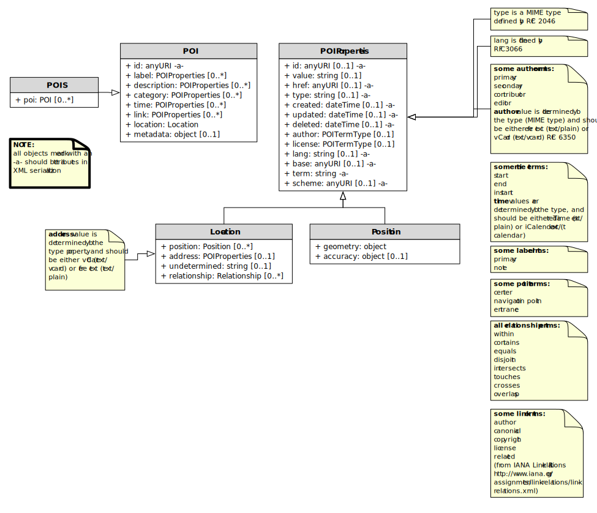

This file captures contributions of the participants of International AR Standards Meeting conducted Oct 11-12 in Seoul. Added to this wiki page Oct 26, 2010
Abstract
<Insert Abstract Text here>
Keywords
The following are keywords to be used by search engines and document catalogues.
ogcdoc, OGC document, poi, gazetteer, pointsofinterest, placesofinterest
Also include these in a meta tag in the html head:
<meta name="keywords" content="ogcdoc, OGC document">
Preface
<Insert Preface Text here. Give OGC specific commentary: describe the technical content, reason for document, history of the document and precursors, and plans for future work.>
Attention is drawn to the possibility that some of the elements of this document may be the subject of patent rights. The Open Geospatial Consortium shall not be held responsible for identifying any or all such patent rights.
Recipients of this document are requested to submit, with their comments, notification of any relevant patent claims or other intellectual property rights of which they may be aware that might be infringed by any implementation of the standard set forth in this document, and to provide supporting documentation.
Submitting organizations
The following organizations submitted this Document to the Open Geospatial Consortium (OGC):
- <Organization A>
- <Organization B>
Submitters
All questions regarding this submission should be directed to the editor or the submitters:
| Name | Affiliation |
|---|---|
|
|
|
|
|
|
Scope
<Insert Scope text here. Give the subject of the document and the aspects of that scope covered by the document. >
This document describes a data model and XML syntax for representing information about points of interest (POI).
In the most broad terms, a "point of interest" is a location about which information of general interest is available. A POI can be as simple as a set of coordinates and an identifier, or more complex such as a three dimensional model of a building with names in various languages, information about open and closed hours, and a civic address. POI data has many uses including navigation systems, mapping, geocaching, location-based social networking games, and augmented reality browsers.
POI data has traditionally been exchanged in proprietary formats by various transport mechanisms. This specification defines a flexible, lightweight, extensible POI data model. This will enable content publishers to effectively describe and efficiently serve and exchange POI data.
To achieve these goals, this document describes a generic data model that may be instantiated in a variety of serializations, including XML, JSON and RDF.
Here is an example of a simple POI serialized in XML:
<?xml version="1.0" encoding="UTF-8" standalone="yes"?>
<poi id="http://www.rajsingh.org/pois/45343489">
<label term="primary">
<value>Boston</value>
</label>
<description term="source" href="http://en.wikipedia.org/wiki/Boston">
<value>Boston is the capital of and largest city in Massachusetts, and is one of the oldest
cities in the United States. The largest city in New England, Boston is regarded as the
unofficial "Capital of New England" for its economic and cultural impact on the entire
New England region. The city proper had a population of 617,594 according to the 2010
U.S. Census.
</value>
<author id="http://en.wikipedia.org" term="publisher" type="text/plain">
<value>Wikipedia</value>
</author>
</description>
<category term="city" scheme="http://www.usgs.gov/placetypes">
<value>seat of a first-order administrative division</value>
</category>
<link term="canonical" href="http://www.rajsingh.org/pois/45343489.xml"
type="text/xml" scheme="http://www.iana.org/assignments/link-relations/link-relations.xml"/>
<link term="related" href="http://en.wikipedia.org/wiki/Boston"
type="text/html" scheme="http://www.iana.org/assignments/link-relations/link-relations.xml"/>
<link term="related" href="http://www.geonames.org/maps/google_42.358_-71.06.html"
type="text/html" scheme="http://www.iana.org/assignments/link-relations/link-relations.xml"/>
<location>
<point term="centroid">
<Point srsName="http://www.opengis.net/def/crs/EPSG/0/4326">
<posList>42.358 -71.06</posList>
</Point>
</point>
</location>
</poi>
Conformance
This standard defines XXXX.
Requirements for N standardization target types are considered:
- AAAA
- BBBB
Conformance with this standard shall be checked using all the relevant tests specified in Annex A (normative) of this document. The framework, concepts, and methodology for testing, and the criteria to be achieved to claim conformance are specified in the OGC Compliance Testing Policies and Procedures and the OGC Compliance Testing web site.
In order to conform to this OGC™ interface standard, a software implementation shall choose to implement:
a) Any one of the conformance levels specified in Annex B (normative).
b) Any one of the Distributed Computing Platform profiles specified in Annexes TBD through TBD (normative).
All requirements-classes and conformance-classes described in this document are owned by the standard(s) identified.
References
The following normative documents contain provisions that, through reference in this text, constitute provisions of this document. For dated references, subsequent amendments to, or revisions of, any of these publications do not apply. For undated references, the latest edition of the normative document referred to applies.
<Insert References here. If there are no references, state “There are no normative references”.>
Terms and Definitions
This document uses the terms defined in Sub-clause 5.3 of [OGC 06-121r8], which is based on the ISO/IEC Directives, Part 2, Rules for the structure and drafting of International Standards. In particular, the word “shall” (not “must”) is the verb form used to indicate a requirement to be strictly followed to conform to this standard.
For the purposes of this document, the following additional terms and definitions apply.
- Location
- The term location is used to refer to an identifiable geographic place [ISO19112]. Typically a location is a physically fixed point, typically on the surface of the Earth, though locations can be relative to other, non-earth centric coordinate reference systems. Locations can be a single point, a centroid, a minimum bounding rectangle, or a set of vectors. A location should be persistent over time and does not change. Multiple POIs may share the same location. When a POI physically moves it is understood to have acquired a new location.
- Points of Interest
- Unlike the term location, the term POI is a human construct. POIs typically describe a location where one can find a place, product or service, typically identified by name rather than by address and characterized by type, which may be used as a reference point or a target in a location based service request, e.g., as the destination of a route. For the purposes of this document, the term POI does not exclude the labeling, identification, and tracking of persons and other physical objects that have no permanent location.
- Places
- A place is also a human construct which typically has a coarse level of spatial granularity. Places are generally larger scale administrative constructs, either informally or formally defined. Countries, states, counties, districts, neighborhoods and postal codes or telephone area codes are all places. Places are also informally or colloquially defined, such as the Home Counties in the United Kingdom and the Bay Area in the United States. + Places have spatial relationships; with parents, children, adjacencies and contained by semantics. Places have the same attribute set as POIs, although often with differing interpretations based on scale; for example, the address of a Place or its URI might refer to the address of the administrative or governing body of the place. + A place typically contains multiple POIs and can also be coterminous with a POI. In the former case, a place, such as a city or a neighborhood, will contain multiple POIs. In the latter case, a place and a POI will occupy the same position and extent, such as in the case of Yellowstone National Park, which is both a Place and a POI. For the purposes of this document no distinction will be made between a place and a POI.
- Coordinate
- The term coordinate refers to one of a sequence of n numbers designating the position of a point in n-dimensional space [ISO19111].
- Coordinate Reference System
- The term coordinate reference system refers to a coordinate system that is related to an object by a datum [ISO19111].
- Coordinate System
- The term coordinate system refers to a set of mathematical rules for specifying how coordinates are to be assigned to points [ISO19111].
- Datum
- The term datum refers to a parameter or set of parameters that define the position of the origin, the scale, and the orientation of a coordinate system [ISO19111].
- Geolocation
- The term geolocation refers to the identification of the real world geographic location of an object.
- Point
- The term point refers to a 0-dimensional geometric primitive, representing a position [ISO19107].
- Position
- The term position refers to a data type that describes a point or geometry potentially occupied by an object or person [ISO19133].
- Route
- The term route refers to a sequence of links and / or partial links that describe a path, usually between two positions, within a network [ISO19133].
- Coordinate Set
- The term coordinate set refers to the individual parts of a coordinate. This is often a simple coordinate pair of latitude and longitude values, but based on the coordinate system used, may be other values, see [coordinate_reference_systems].
Conventions
This sections provides details and examples for any conventions used in the document. Examples of conventions are symbols, abbreviations, use of XML schema, or special notes regarding how to read the document.
The key words "must", "must not", "required", "shall", "shall not", "should", "should not", "recommended", "may", and "optional" in this document are to be interpreted as described in [RFC2119].
POI Conceptual Model (Informative)
Overview
This clause specifies the underlying POI conceptual model for which an encoding can be created. It defines the mandatory requirements for encoding and the necessary semantics of how that encoding should be interpreted.
Core Conceptual Model
The Point of Interest data model consists of a POI object and a POIS grouping object. Each POI has a number of properties described in the POIProperties object for capturing descriptive information, along with a Location object describing its location and a Position object describing its geometry and positional accuracy. In order to maximize the flexibility with which POI, POIs and their sub-entities can be described, each inherit its properties from a single common object. In practical terms, this allows properties such as update time, authorship, links and other categorizations to be described at multiple levels of granularity within the data model.

The classes of the core data model are described in more detail below.
POI
A POI is defined as having the following conceptual properties:
- a globally unique ID
- labels
- descriptions
- location
- tags/keywords/categories
- links to related information
- time
- authors
- rights
- metadata
While a POI may be near meaningless without a label and location, from a computational perspective there are use cases in which any of these properties should be optional. Therefore, the only mandatory characteristic of a POI is that it have a globally unique identification property in the format of a URI.
Labels and Descriptions
Labels (place names) and descriptions are largely self-explanatory properties. A place may have multiple labels, as it may be known differently by different people, in different languages or in different times or contexts. Multiple descriptions are important for the same reasons.
Location
The most common way of expressing the location of a POI is as a point defined by latitude and longitude coordinates in decimal degrees. This specification enhances that basic definition, allowing a POI’s location to be determined by either a point, line, polygon or civic address. A POI may also use more than one location definition property to more clearly specify multiple locational concepts, such as a building’s address, boundary, centroid, and entrance. A POI is most useful when its location is well-known, but this is not always possible, so the model supports the ability to express location relative to other POIs. This feature may be used alone, or in addition to, an absolute location.
Categories
Tagging, or categorizing a POI is a common practice in wide use by personal navigation systems, government gazetteers such as the USGS Geographic Names Information System, and businesses like Yelp!. Therefore the POI specification supports structured categorization, where the identifying term comes from a dictionary - or registry of terms - and it also supports "free" tagging, where the identifying term is simply that - a word or phrase with no reference to a structured information model.
Links
Links to related information allow a POI reference content that may exist in external repositories, such as images, web pages, maps, reviews, 3D models, and even other POI data repositories.
Time
Time plays an important role as no place stays the same forever. A POI may have a start time and/or an end time. The POI data record (and also all its child properties) may also have start, end and last updated time stamps.
Authors and Rights
Identifying authors and licensing terms are important aspects of any information sharing system. These two are so important that they are separated from any more universal metadata definition system used by the following mechanism.
Metadata
Metadata and provenance is a such a broad, generic area of work that one approach could not work for all POIs. Therefore, if a POI contains metadata it must also define the metadata information model it uses.
Property Inheritance
In many cases, POI information is nested in a heirarchical system. Any property of a POI applies to all its child properties, unless that property is re-defined in the child. For example, if a POI has an author property of "A", and the POI has a description property of "D", the author of D is A, unless D has an author property itself. Then the author of D is whatever D defines it to be. One useful feature of inheritance is that if only one property of a POI has a different author, it is easy to express that fact precisely without adding a lot of duplicative author information to every property in the POI.
POIS
Multiple POIs may be grouped into a POIS object, which serves only as a container object such that a group of POIs can inherit properties - for example authorship, licensing or categorization. The POIS object is expected to be useful only as a dynamic aggregation mechanism when information is being shared between systems. It is not expected to be of any particular use as a way to permanently model POI information in a database.
Following sections provide additional detail on the properties described above.
POI
a POI shall have a globally unique identification property named
id in the format of a URI.
A POI shall contain exactly one Location object.
A POI shall contain zero or more of the following objects: label; description; category; time; link; metadata.
POI extends POIProperties and adds the objects in the table below.
| Name | Type | Multiplicity |
|---|---|---|
| label | POIProperties | 0..* |
| description | POIProperties | 0..* |
| category | POIProperties | 0..* |
| time | POIProperties | 0..* |
| link | POIProperties | 0..* |
| location | Location | 1 |
| metadata | text | 0..* |
Location
Location is of type POIProperties and provides a flexible description of the geographic location of a POI. A Location can be represented in a variety of ways, such as the geographic coordinates of the center of the POI, the civic address, line, bounding box, polygon, or undetermined. A location is a mandatory part of a POI and has child properties describing the geometry, civic address or spatially related POIs.
| Name | Type | Multiplicity |
|---|---|---|
| point | geometry | 0..* |
| line | geometry | 0..* |
| polygon | geometry | 0..* |
| address | POIProperties | 0..* |
| relationship | Relationship | 0..* |
| undetermined | null | 0..1 |
point
The point object is derived from POIProperties and adds a single geometry object whose type is determined by the encoding. It describes a single coordinate set, the interpretation of which is influenced by the CRS attribute.
The point object locates a point within the POI and is the most common way of specifying a location. For most places, such as cities, businesses, tourist sites, or events, a point location can be useful for many types of software applications where additional detail is unnecessary, such as driving directions or computing rough distances. Therefore, even if the POI is also specified with a polygon or a line, it is good practice to include a point whose term property is "centroid".
| Name | Type | Multiplicity |
|---|---|---|
| Point | geometry | 1 |
It is recommended to use the term property to discriminate between different Point object categories.
Recommended Terms
| Name | Details |
|---|---|
| centroid | The centroid of the Location |
| navigation point | Generic navigation point |
| entrance | Navigation point to the entrance |
line
The line object is derived from POIProperties and adds a single linear geometry object whose type is determined by the encoding. It describes a list of two or more coordinate sets, the interpretation of which is influenced by the CRS attribute.
| Name | Type | Multiplicity |
|---|---|---|
| LineString | geometry | 1 |
A Line object can be used to describe a linear feature, such as a road, a bike route, a river, etc.
polygon
The polygon object is derived from POIProperties and adds a single area geometry object whose type is determined by the encoding.
| Name | Type | Multiplicity |
|---|---|---|
| SimplePolygon | geometry | 1 |
address
The Address object is of type POIProperties and describes a civic address such as a mailing address or a street address. It’s value is determined by the type property, and should be either vCard (text/directory) or free text (text/plain).
relationship
relationship is a Relationship property that describes the spatial relationship between this POI and another.
undetermined
An undetermined property represents a location that is as of yet unknown or unspecified. This can be used to describe a POI prior to the final location being resolved. The undetermined object has no properties.
If a Location neither includes a geometry nor an address, then it must include the undetermined property.
label
A human-readable name. Multiple names are used for synonyms, and for multiple languages.
The label object is of type POIProperties and specifies a human-readable name. The language of label may be indicated using the lang property. Multiple labels may be discriminated with the term property (e.g. primary, colloquial, etc.). The first label encountered per language is considered the primary label for that language.
It is recommended to use the term property to discriminate between different categories of label entities.
| Name | Definition |
|---|---|
| primary | The primary label |
| note | An annotation label |
description
A human-readable narrative description that can be discrimintated with the language attribute. description is of type POIProperties and specifies a human readable description. The language the description is in may be indicated using the lang property. The first description encountered per language is considered the primary description for that language.
category
The category property classifies the POI using keywords. Category is adopted from the atom:category object [RFC4087], and works in much the same way. A category should specify the type of POI, such as city, restaurant, etc. The category’s value property is the keyword, or tag. The term, if specified, is the classification scheme to which the value belongs. To emulate a "folksonomy" or "free tagging", the term shall be "free". This tagging system may be more formally structured using the scheme property to specify a dictionary of terms or a web resource containing definitions of the terms and values.
Multiple categories are allowed to accommodate the fact that POIs may be more than one thing. For example, a casino might be a gambling hall, a restaurant, and a concert venue. A grocery store may also be a bank and a pharmacy.
The href property may be used to provide a resolvable link to a more comprehensive definition of the category.
It is recommended to utilize the value property when describing human readable categorical descriptions.
link
A link to another POI, or any other web resource. The link object is of type POIProperties and adopted from the atom:link object [RFC4087] which works in much the same way. A link is a generic way to define a relationship between the POI and other Web-accessible resources.
Links are a powerful way to describe a host of relationships. One could argue that just as Web pages obtain most of their value by the links between them, a POI’s value is directly related to the number of links between it and others. Links in POIs are perhaps even more important than links in Web pages or Atom feeds, as POIs are inherently place-based objects with natural relationships in space and time that should be expressed. Those spatial relationships are mostly covered by the relationship property, which is in many ways a specialization of the generic Link. But there are many more semi-spatial and non-spatial relationships that can be expressed using link.
This specification proposes a number of best practices for defining links. Key relations from the IANA registry are listed below in italics. Those relations in bold are defined only in this specification.
| Name | Description |
|---|---|
| alternate | an identical POI. Often used as a permalink |
| canonical | the preferred version of a set of POIs with highly similar content. For example, there could be many different perceptions of a neighborhood boundary POI, but the city’s neighborhood map could be the canonical version of this POI. |
| describedby | more information about this POI |
| edit | a resource that can be used to edit the POI’s context |
| enclosure | a related resource that is potentially large and might require special handling |
| icon | fill in here |
| latest-version | points to a resource containing the latest version |
| rights | a license or other type of intellectual property right for this POI |
| related | a related resource |
| search | a resource that can be used to search through the link’s context and related resources |
| parent | a parent POI, often the enclosing geographic object, or the object this POI in under the domain of (such as a field office-corporate headquarters relationship) |
| child | a child POI, often a geography object enclosed or under the domain of this POI |
| historic | links to a POI or other web resource that describes this place at a previous point in time |
| future | links to a POI or other web resource that describes this place at a later point in time |
time
A POI exists within a certain context. Time is one of those contexts. The POI may have a known time when it came into being, and can therefore have a start date. The POI might no longer exist at a known point in time (in the future or in the past), and will therefore have an end date. There can be even more complex cases, where a POI exists on a regularly scheduled sequence of times. This data model supports that case by allowing one to set the MIME type (type property) to text/calendar, and specify the time period using the iCalendar specification [RFC5545].
When the MIME type attribute is undetermined or text/plain, the content of the value property is assumed to be in the dateTime format [ISO8601]. When the MIME type attribute is text/calendar, the value content is expected to conform to the iCalendar specification [RFC5545].
| Name | Definition |
|---|---|
| start | Time when the POI came into being |
| end | Time when the POI ceased to exist |
| instant | A single time when an event happened |
| open | A recuring time period when a POI is open |
Metadata
Dublin Core or [ISO19115] metadata.
POIProperties
POIProperties is an abstract base object that provides the common base for most other core POI classes. It provides properties related to unique ids, source, authorship, rights, and modification times for creation, deletion and updating.
The category, link, label, author, rights and time properties in addition to the geometry elements point, line and polygon entities are all instances of POIProperties.
This base type allows the POI class, POIS grouping class and most child classes to carry distinct information about their provenance, source and history.
Serializations shall support the encoding of all mandatory and optional parameters of the POIProperties Class and meet all of the tabulated constraints and notes.
| Name | Type | Multiplicity |
|---|---|---|
| id | string | 0..1 |
| href | URI | 0..1 |
| value | string | 0..1 |
| base | URI | 0..1 |
| type | string | 0..1 |
| lang | string | 0..1 |
| created | dateTime | 0..1 |
| updated | dateTime | 0..1 |
| deleted | dateTime | 0..1 |
| author | POIProperties | 0..1 |
| rights | POIProperties | 0..1 |
| term | string | 1 |
| scheme | URI | 0..1 |
id
A unique identifier for this location. Can be a URI fragment. Refer to xml:base [XMLBASE] for more information on usage.
The id property is mandatory for the POI object. It is recommended that id be a URL - preferably a deferenceable URL - or that a URL can be constructed by appending id to base URI.
href
The href property may serve as an absolute reference to retrieve the POI information when the id and base do not combine to form a deferenceable URL.
value
The value property is the recommended location for arbitrary strings (e.g. label, description, etc.). Many entities derived from POIProperties will not require this property (e.g. link, rights, geometry properties).
base
XML base when id is not absolute. Refer to xml:base [XMLBASE] for more information on usage.
type
MIME type as specified in [RFC2046].
lang
Language type as specified in [RFC3066].
created
This property is for capturing the time at which the POI record was created in the computing environment. Any information about the existence of the POI as a human concept should use the POI time property.
updated
Time this POI information was last changed [ISO8601] also refer to atom:updated [RFC4087]. This property is for capturing the time at which the POI record was updated in the computing environment. Any information about the existence of the POI as a human concept should use the POIType time property.
deleted
This property is for capturing the time at which the POI record was deleted from the computing environment. Any information about the existence of the POI as a human concept should use the POI time property.
author
When in an author property, value specifies the author’s identification information, which should at minimum be the author’s name. When the type (MIME type) property (MIME type) is undetermined or text/plain, the content of the value property is assumed to be free text. When the type property is text/vcard, value should be encoded in VCard format [RFC6350].
Multiple authors can be specified by nesting author properties, and their authorship role may be discriminated with the term property (e.g. primary, publisher, editor, etc.).
| Name | Definition |
|---|---|
primary
|
Primary author |
secondary
|
Secondary author |
contributor
|
A contributing author |
editor
|
Editor |
publisher
|
Publisher |
rights
The rights object is of type POIProperties and specifies rights such as license restrictions, trademarks, and copyright. The language the rights are in may be indicated using the lang property. Multiple rightss may be discriminated with the term property (e.g. common, opensource, etc.). The first right encountered per language is considered the primary right for that language.
term
A machine-readable character string to designate any number of discrete choices.
scheme
An absolute reference to the schema enumerating the discrete choices in term.
Relationship
Relationship is derived from POIProperties and adds a targetPOI property to describes the spatial relationship between this POI and another. It establishes 1-to-1 or 1-to-many relationships between POIs.
| Name | Type | Multiplicity |
|---|---|---|
| targetPOI | URI | 1 |
targetPOI
Each targetPOI property must be a URI that defines a link to another POI, and the Relationship’s term must be assigned one of 8 keywords that describe the geo-spatial relationship to the POI indicated by the targetPOI property.
[ISO13249-3] (SQL/MM Spatial) supports the general purpose relates operator from [ISO19107], which tests if two geometries (a and b) are related by testing the dimension of the intersections of their boundaries, interiors and exteriors. Points have a dimension of zero, curves one and surfaces two.

SQL/MM also supports the 19107 operator equals, which tests if two geometries are spatially equal. More formally, their symmetric difference must be empty. SQL/MM then adds seven semantic operators to test the relationship between geometries a and b. These relationships are expressed in terms of the boundary, interior and exterior intersections to avoid ambiguities.
| Name | Definition |
|---|---|
| equals | A equals B tests if the geometries are spatially equal. More formally, their symmetric difference must be empty. The test for equivalence may be limited to the resolution of the coordinate system or the accuracy of the data. |
| disjoint | A disjoint B tests if A and B have NO points in common. |
| intersects | A intersects B tests if A and B have ANY points in common. |
| crosses | A crosses B if their interiors intersect with a dimension less that the larger of the dimension of A or B and the intersection of the interior of a with the exterior of B is not null (so for two lines, the intersection has to be at a finite number of points). Surfaces cannot cross anything. Points cannot be crossed by anything. |
| overlaps | A overlaps B tests if part of their respective interiors intersect, and if this intersection is the same dimension as the interiors of the original geometries. (This last bit rules out crosses). Some of their interior must intersect with the exterior of the other one and vice versa (i.e., one cannot be within the other). This bit rules out within and contains. Overlap only applies if the two geometries are of the same dimension. |
| within | A within B if their intersection equals A. e.g. a POI describing a store may state that it is contained within a shopping mall. |
| contains | A contains B is equivalent to B within A. e.g. a POI describing a mall may state that it contains POIs for each store that is within the mall. |
| touches | A touches B means one’s boundary intersects with the other’s interior or boundary. Interiors cannot intersect. Points cannot touch. e.g. a POI representing a store within a mall may state that it is next door to another POI which represents the store next door. |
Geometry
Geometry is the base object from which all geometry entities are derived. It combines a coordinate system description with a set of coordinates.
| Name | Type | Multiplicity |
|---|---|---|
| [srsName] | URI | 0..1 |
| PosList | string | 1 |
PosList
A coordinate set whose format is determined by the geometry type - Point, LineString, or SimplePolygon.
Coordinate Reference Systems
In all of the entities that specify geodetic coordinates, an srsName property is included in order to indicate the coordinate reference system (CRS) being used. The srsName value is a URI [RFC3986] indicating the CRS used and is http://www.opengis.net/def/crs/EPSG/0/4326 by default. This default is the URI for the World Geodetic System 84 (WGS84) in 2 dimensions, latitude and longitude. Other CRS URNs are allowed. In particular, the URI http://www.opengis.net/def/crs/EPSG/0/4979 indicates WGS84 in 3 dimensions, latitude, longitude and elevation in meters above sea level. The CRS used influences the interpretation of the coordinate set.
The default CRS refers to WGS84 geographic longitude and latitude expressed in decimal degrees, namely EPSG 4326, without the degrees symbol, "°". The values of latitude and longitude are bounded by ±90° and ±180° respectively. Positive latitudes are north of the equator, negative latitudes are south of the equator. Positive longitudes are east of the Prime Meridian, negative longitudes are west of the Prime Meridian. Latitude and longitude are expressed in that sequence, namely latitude before longitude.
Implementations are required to support the following CRS based on WGS 84 NIMA.TR8350.2-3e [NIMA-TR8350-2]. These are identified using the European Petroleum Survey Group (EPSG) Geodetic Parameter Dataset, as formalized by the Open Geospatial Consortium (OGC):
- http://www.opengis.net/def/crs/EPSG/0/4326: 2 dimensional WGS 84, latitude, and longitude
- http://www.opengis.net/def/crs/EPSG/0/4979: 3 dimensional WGS 84, latitude, longitude, altitude
The most recent version of the EPSG Geodetic Parameter Dataset should be used. A CRS must be specified using the above URI notation only, implementations do not need to support user-defined CRSs. This specification does not assign responsibilities for coordinate transformations from and to other Coordinate Reference Systems.
The term coordinate set as used throughout this document refers to coordinates as influenced by the rules laid out above.
POIS
A POIS object shall inherit the properties of a POIProperties object.
A POIS object shall include zero or more POI objects.
POIS extends POIProperties and adds the properties in the table below.
| Name | Type | Multiplicity |
|---|---|---|
| poi | POI | 0..* |